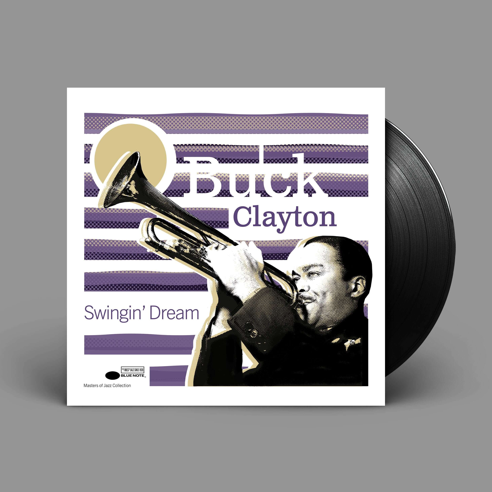
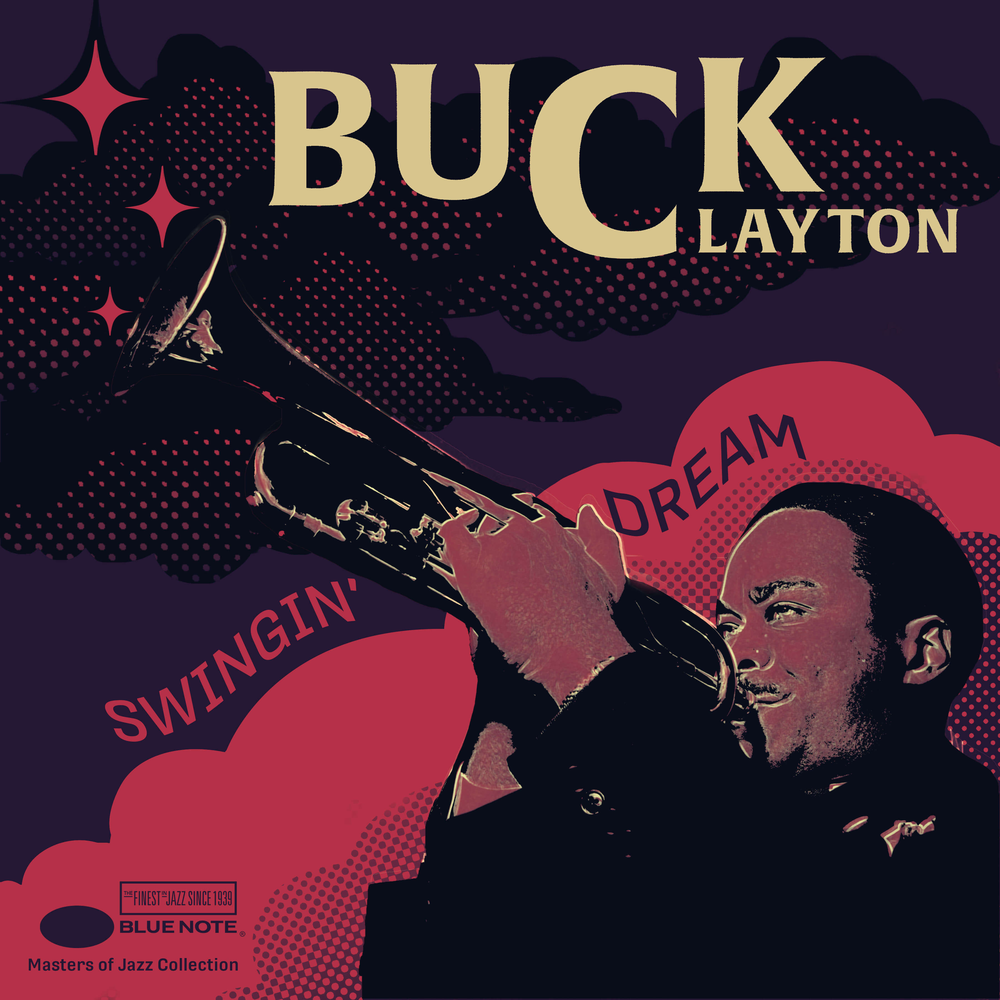

Sketch placeholder
Add concept sketches, thumbnails, or iteration sheets here.
Case Study · Design · 2025
This vinyl cover for jazz trumpeter Buck Clayton channels the elegance, rhythm, and improvisational energy of his musical style into a minimalist visual language. The goal was to honor Blue Note Records' iconic design legacy while capturing the swing and sophistication of Clayton's 1940s-50s jazz performances.

Add concept sketches, thumbnails, or iteration sheets here.
Add studio, making-of, or work-in-progress images here.
Add presentation mockups, close-ups, or alternate views here.
The design employs reductive photography—using halftone treatment to simplify Clayton's portrait into high-contrast graphic form. This reduction references Blue Note's signature approach of pairing stark photography with geometric abstraction. Soft horizontal stripes flow across the composition, suggesting melodic movement and rhythmic phrasing. The asymmetric layout creates visual tension that mirrors jazz improvisation's balance between structure and spontaneity. The color palette draws from Blue Note's classic combinations—deep blues, warm earth tones, and bold accents—establishing immediate genre recognition. Typography is clean and modernist, allowing the image to dominate while maintaining functional hierarchy for album information.

My initial design explored a more experimental approach before refining it to better align with Blue Note's sophisticated visual language while maintaining the musical energy.
The cover captures both the structure and soul of Clayton's performance—bridging historical photography with stylized abstraction. The design demonstrates how reductive techniques can distill complex music into visual essence, honoring Blue Note's design tradition while creating a distinct identity for this album.